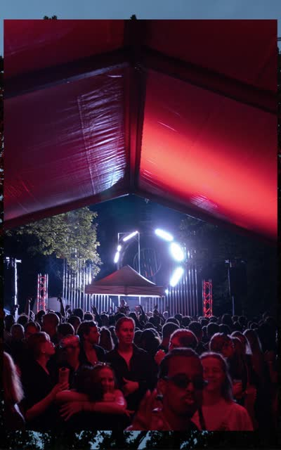
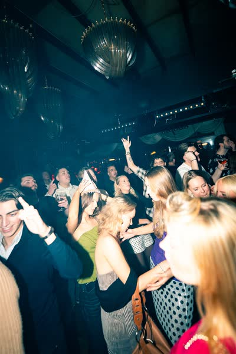
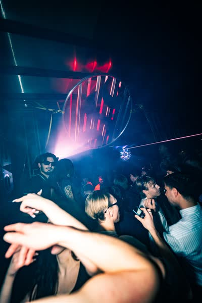
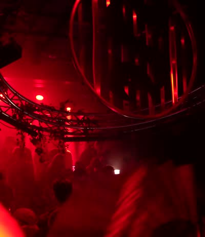
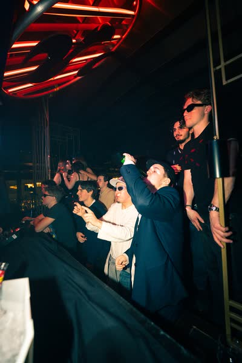
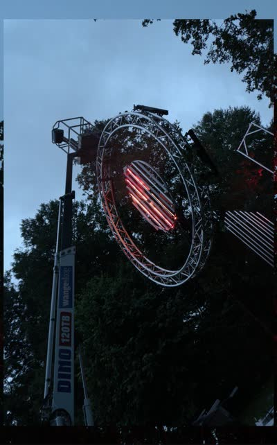
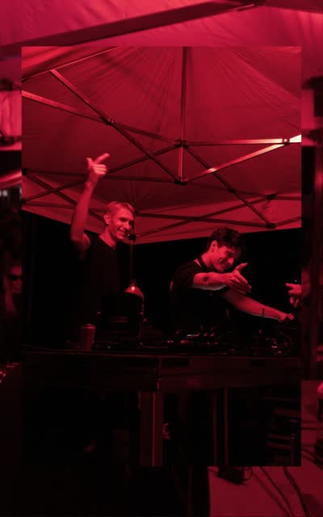

25
July ’26
Midnight Grooves
◷ Secret Location, Stockholm · 25–26 July 2026 · 22:00–05:00
Secret forest event with high production. 18+.
✦ No upcoming events announced yet. Follow us on Instagram →
 Slutstation
Slutstation
Experience underground house music. Access the inaccessible, high production events found no where else in Stockholm.
Access to our events is strictly for members. We announce our events on Instagram, stay tuned.
Members hear first, and our events sell out before they reach anyone else.
Joining is free and takes a minute.
Slutstation is an independent nightlife collective dedicated to underground music, custom scenography, and community-driven events. Combined with meticulous sound design, carefully selected underground artists, and unique outdoor settings, we create immersive spaces built entirely around connection through music and art.
Operating on a non-profit basis, our mission is to curate uncompromising sonic and visual experiences that offer a genuine alternative to commercial nightlife. We build our own custom scenography from scratch for every single event, ensuring that no two nights ever look or feel the same.
We prioritize quality over frequency, keeping every event intentional, rare, and memorable.
We are not trying to fix the existing club scene. We are building what comes after.
Join kulturföreningen and create your Slutstation account in one step. Membership is free and required to attend our outdoor events.
Membership is free and runs to the end of the calendar year, everyone renews in January, whenever they joined. Creating your account registers you with Kulturföreningen Musikbopp, gives you a tier that grows every time you come, and a tier code the bar and the wardrobe can scan.
DJ? There's a toggle on the signup form, apply while you join.






We don't do quantity, we do quality. Every event is built from scratch, we don't throw parties just for the sake of it.
Becoming a member means you're aligned with our culture and values, a nightlife built on sound, trust, and something real.
Becoming a member means you're aligned with our culture and values. Membership gives you access to our outdoor events. It's free, always will be, and runs to the end of the calendar year. Join in August and you're a member until 1 January; everyone renews in January, whenever they joined. When you sign up you'll get a confirmation email, click the link in it to activate your account, and your membership is registered in eBas automatically. You can see your membership status, your tier and your tier code any time at your account. The tiers, how many events each one takes, and what each one gives you can change as the association grows; anything already given to you stays yours. If any uncertainty arises, please contact us at info@slutstation.se.
Every event is different. We announce and share information about our events via Instagram. Outdoor events location are only revealed to members with tickets before the event. Buying a ticket means agreeing to our Köpvillkor / Ticket purchase terms, and attending means agreeing to our Ordningsregler / Event terms & conduct. Stay tuned!
Den svenska texten är den som gäller vid en tvist. The Swedish text below governs; the English translation follows it and is provided for convenience.
1. Säljare. Kulturföreningen Musikbopp, org.nr 802543-7834, med säte i Tyresö, ansluten till Svensk Live. E-post: info@slutstation.se. Föreningen är arrangör av evenemangen och ansvarig för villkoren nedan.
2. Var biljetter säljs. Biljetter säljs via Billetto (billetto.se). Köpet genomförs i Billettos kassa enligt Billettos köpvillkor, och eventuella serviceavgifter visas där innan du betalar. Villkoren nedan gäller vårt ansvar som arrangör, oavsett var biljetten är köpt.
3. Ångerrätt. Det finns ingen ångerrätt på evenemangsbiljetter. Det följer av 2 kap 11 § punkt 12 lagen (2005:59) om distansavtal och avtal utanför affärslokaler, som undantar kulturevenemang och liknande fritidsaktiviteter när tjänsten ska tillhandahållas på en bestämd dag. Du kan alltså inte ångra ett biljettköp inom 14 dagar.
4. Om vi ställer in eller flyttar evenemanget. Ställs evenemanget in får du hela biljettpriset tillbaka. Det gäller oavsett orsak, även vid väder, myndighetsbeslut, strömavbrott, lokalproblem eller andra händelser utanför vår kontroll. Vi kan erbjuda dig en biljett till ett kommande evenemang i stället, men du är aldrig skyldig att acceptera det, och du kan alltid välja pengarna. Flyttas evenemanget till ett annat datum får du välja mellan att behålla biljetten och att få pengarna tillbaka. Ändras evenemanget väsentligt, till exempel byte till en annan spelplats eller att en utannonserad huvudakt uteblir, har du rätt till återbetalning eller prisavdrag. Återbetalning sker till samma betalsätt, normalt inom 14 dagar.
5. Vad återbetalningen inte omfattar. Vi ersätter biljettpriset. Vi ersätter inte kringkostnader som resa, boende, förlorad arbetsinkomst eller liknande, om inte vi orsakat skadan genom vårdslöshet. Denna begränsning gäller inte vid personskada och inte vid uppsåt eller grov vårdslöshet.
6. Om du inte kan komma. En köpt biljett till ett evenemang som genomförs återköps inte. Hör av dig ändå om något allvarligt har hänt, vi löser sådant från fall till fall och gör det hellre generöst än formellt. Biljetter är personliga och knutna till ditt konto. Vill du överlåta en biljett till en annan medlem, mejla oss så flyttar vi den.
7. Nekad entré. Våra evenemang är 18+ och legitimation krävs. Vi kan neka inträde eller avvisa någon vid kraftig berusning, påverkan av droger, hotfullt eller kränkande uppträdande, eller om personen inte följer säkerhetsanvisningar. I dessa fall återbetalas inte biljetten. Kan du inte legitimera dig, eller är du under 18 år, återbetalas inte heller biljetten, kontrollera detta innan du köper.
8. Reklamation och tvist. Hör av dig till info@slutstation.se så svarar vi så fort vi kan. Om vi inte kommer överens kan du vända dig till Allmänna reklamationsnämnden (ARN), Box 174, 101 23 Stockholm, www.arn.se. Vi följer ARN:s rekommendationer.
9. Tillämplig lag. Svensk lag gäller. Vid en tvist är den svenska versionen av dessa villkor den som gäller.
1. Seller. Kulturföreningen Musikbopp, org.nr 802543-7834, seated in Tyresö, affiliated with Svensk Live. Email info@slutstation.se. The association organises the events and stands behind the terms below.
2. Where tickets are sold. Tickets are sold through Billetto (billetto.se). The purchase itself happens in Billetto's checkout under Billetto's purchase terms, and any service fees are shown there before you pay. The terms below cover our responsibility as the organiser, wherever the ticket was bought.
3. Right of withdrawal. There is no 14-day right of withdrawal on event tickets. This follows from chapter 2, section 11, point 12 of the Swedish Distance Contracts Act (2005:59), which excludes cultural events and similar leisure activities supplied on a specific date.
4. If we cancel or move the event. If the event is cancelled you get the full ticket price back. That applies whatever the cause, including weather, an order from the authorities, a power failure, a venue problem, or anything else outside our control. We may offer you a ticket to a future event instead, but you are never obliged to accept it and you can always take the money. If the event moves to another date, you choose between keeping your ticket and getting a refund. If the event changes materially, a different venue, or an advertised headline act not appearing, you are entitled to a refund or a price reduction. Refunds go back to the same payment method, normally within 14 days.
5. What a refund does not cover. We refund the ticket price. We do not compensate surrounding costs such as travel, accommodation or lost earnings, unless we caused the loss through negligence. This limitation does not apply to personal injury, nor to intent or gross negligence.
6. If you can't make it. A ticket to an event that goes ahead is not bought back. Get in touch anyway if something serious has happened, we handle those case by case, and we would rather be generous than formal. Tickets are personal and tied to your account. To pass a ticket to another member, email us and we'll move it.
7. Refused entry. Our events are 18+ and ID is required. We may refuse entry or remove someone for heavy intoxication, drug use, threatening or abusive behaviour, or refusal to follow safety instructions. In those cases the ticket is not refunded. If you cannot show ID, or are under 18, the ticket is likewise not refunded, check this before you buy.
8. Complaints and disputes. Write to info@slutstation.se and we'll answer as quickly as we can. If we can't agree, you can take it to the Swedish National Board for Consumer Disputes (Allmänna reklamationsnämnden, ARN), Box 174, 101 23 Stockholm, www.arn.se. We follow ARN's recommendations.
9. Governing law. Swedish law applies. In a dispute, the Swedish version of these terms governs.
18+ och legitimation. Våra evenemang är för dig som fyllt 18. Ta med giltig legitimation, vi kontrollerar i dörren.
Var evenemanget hålls. För utomhusevenemang lämnas platsen ut till dig som har biljett, kort innan evenemanget. Sprid den inte vidare.
Väder. Utomhusevenemang genomförs i regn såväl som sol. Vi ställer in bara om vädret innebär en verklig säkerhetsrisk, och ställer vi in får du pengarna tillbaka enligt köpvillkoren ovan.
Uppträdande. Vi har nolltolerans mot droger, våld, trakasserier och diskriminering. Följ personalens och vakternas anvisningar. Den som inte gör det avvisas.
Alkohol. Alkohol serveras endast där vi har serveringstillstånd, och endast av vår personal. Det är inte tillåtet att ta med egen alkohol in på området.
Ditt ansvar. Du ansvarar för dina egna tillhörigheter. Vi ansvarar inte för borttappade saker, men hör av dig, vi förvarar hittegods en tid efter varje evenemang.
18+ and ID. Our events are 18+. Bring valid ID; we check at the door.
Where the event is. For outdoor events the location goes out to ticket holders shortly before. Don't pass it on.
Weather. Outdoor events run rain or shine. We only cancel if the weather is a genuine safety risk, and if we cancel, you get your money back under the purchase terms above.
Conduct. Zero tolerance for drugs, violence, harassment and discrimination. Follow the instructions of our staff and security. Anyone who doesn't will be removed.
Alcohol. Alcohol is served only where we hold a serving licence, and only by our staff. Bringing your own is not permitted.
Your things. You look after your own belongings. We're not liable for lost property, but do get in touch, we keep found items for a while after each event.
Föreningen. Föreningens namn är Kulturföreningen Musikbopp. Föreningen har sitt säte i Tyresö och är ansluten till Svensk Live. Föreningen är en fristående, partipolitiskt och religiöst obunden ideell förening. Föreningen är personuppgiftsansvarig för allt som beskrivs nedan. Frågor, eller en begäran om dina uppgifter: info@slutstation.se.
Dina uppgifter finns på två ställen. När du blir medlem registreras dina uppgifter i eBas, medlemsregistret som Svensk Live driver, att bli medlem hos oss gör dig alltså också till medlem i Svensk Live. Separat lagras ditt Slutstation-konto i vår egen databas (Supabase), som ligger inom EU (Irland).
Vad vi sparar, och varför.
· Ditt konto: namn, e-post, telefon, födelsedatum och adress. Vi behöver dem eftersom eBas kräver dem för att registrera och förnya ditt medlemskap. Ditt lösenord lagras aldrig i läsbar form hos oss; det hashas av vår autentiseringsleverantör.
· Medlemsstatus: om ditt medlemskap är aktivt och när det senast förnyades, så att vi kan visa den gröna bocken.
· Närvaro: vilka event du checkats in på i dörren, och när. Det är detta din tier räknas fram ur.
· Din tier: härleds ur närvaron de senaste 24 månaderna. Den lagras inte separat, utan räknas fram ur dina incheckningar.
· Val om utskick: om du tackat ja till att höra om kommande event. Det är skilt från att bli medlem, det är avstängt om du inte kryssar i det, och du kan stänga av det när som helst på ditt konto.
· En referenskod: genereras för varje konto. Den används inte i dag.
· Arbetspass: om du jobbar ett event: vilket event och i vilken roll.
· Dörranteckning och incidentrapporter: en administratör kan skriva en kort anteckning om en medlem (till exempel "nekad entré förra gången") som dörrpersonalen ser vid uppslag under ett pass. Anteckningen raderas automatiskt efter tolv månader, och du kan alltid be att få se din egen. Personalen kan också rapportera händelser under ett evenemang (nekad entré, incident, fullt hus); rapporterna är tidsstämplade och läses endast av administratörer.
· Biljetter via Billetto: deltagarlistan för ett evenemang du köpt biljett till (namn och e-post), så att vi kan släppa in dig. Inga betalningsuppgifter.
Vad vi medvetet inte sparar. Vi sparar inte ditt personnummer. eBas behöver bara ditt födelsedatum (som ÅÅÅÅMMDD) för att registrera dig, och det är allt vi håller. Vi sparar inte kortuppgifter, se betalningar nedan.
Vem kan se det. Som utgångspunkt bara du. Dörr- och barpersonal får åtkomst för ett event i taget; den öppnar några timmar före dörrarna och stängs automatiskt efter eventet. Under passet ser de bara ditt namn, om ditt medlemskap är giltigt, din tier och vilka biljetter du har till just det eventet, aldrig din adress, ditt telefonnummer, ditt födelsedatum eller din e-post. Administratörer kan se medlemsuppgifter för att kunna driva föreningen. Vi säljer inte dina uppgifter och delar dem inte med annonsörer.
Hur länge vi sparar det. Ditt konto och din närvarohistorik sparas så länge kontot finns. Medlemskapet i eBas gäller kalenderåret och upphör 1 januari om det inte förnyas. Be oss radera ditt konto så tar vi bort det ur vår databas; eBas är Svensk Lives register, så vi berättar också hur du blir borttagen därifrån.
Dina rättigheter. Enligt GDPR kan du begära ett utdrag av dina uppgifter, be oss rätta dem, be oss radera dem, eller när som helst ta tillbaka ditt samtycke till utskick. Det mesta kan du göra själv på din kontosida; för övrigt mejlar du oss så ordnar vi det. Du har också rätt att klaga till Integritetsskyddsmyndigheten (IMY).
Biljetter. Biljetter säljs via Billetto, och köpet sker hos dem enligt Billettos integritetspolicy. Vi ser aldrig dina betalningsuppgifter. Inför ett evenemang får vi deltagarlistan från Billetto (namn och e-postadress) för att kunna släppa in dig, och din närvaro registreras då hos oss, vilket är det som flyttar din tier. Återbetalningar täcks av köpvillkoren ovan: ställer vi in eller flyttar ett evenemang får du hela biljettpriset tillbaka, oavsett orsak.
Kontosaldo, på väg, inte igång än. Vi planerar att lägga till ett förbetalt saldo som du kan fylla på och använda till biljetter, bar och merch. Saldot kommer bara att kunna användas hos oss och kommer inte att kunna tas ut som kontanter. Inget som beskrivs i det här stycket samlar in några pengar i dag; det uppdateras med detaljer innan det går igång.
Senast uppdaterad 5 augusti 2026.
The association. Föreningens namn är Kulturföreningen Musikbopp. Föreningen har sitt säte i Tyresö och är ansluten till Svensk Live. Föreningen är en fristående, partipolitiskt och religiöst obunden ideell förening. The association is the data controller for everything described below. Questions, or any request about your data: info@slutstation.se.
Two places your data lives. When you become a member your details are registered in eBas, the membership register run by Svensk Live, becoming a member here also makes you a member of Svensk Live. Separately, your Slutstation account is stored in our own database (Supabase), hosted inside the EU (Ireland).
What we store, and why.
· Your account: name, email, phone, date of birth and address. We need these because eBas requires them to register and renew your membership. Your password is never stored by us in readable form; it is hashed by our authentication provider.
· Membership status: whether your membership is active and when it was last renewed, so we can show you the green check.
· Attendance: which events you were checked in to at the door, and when. This is what your tier is calculated from.
· Your tier: derived from attendance over the last 24 months. It isn't stored separately; it's worked out from your check-ins.
· Email preference: whether you opted in to hear about events. Opting in is separate from joining, it is off unless you tick it, and you can turn it off at any time on your account page.
· A referral code: generated for every account. It is currently unused.
· Staff assignments: if you work an event, which event and in what role.
· Door note and incident reports: an administrator may write a short note about a member (for example "refused entry last time") that door staff see when looking you up during a shift. The note is deleted automatically after twelve months, and you can always ask to see your own. Staff can also file incident reports during an event (refused entry, incident, capacity reached); they are timestamped and read only by administrators.
· Tickets via Billetto: the attendee list for an event you bought a ticket to (name and email), so we can admit you. No payment details.
What we deliberately do not store. We do not store your personnummer. eBas needs only your date of birth (as YYYYMMDD) to register you, and that is all we hold. We do not store card details, see payments below.
Who can see it. By default, only you. Door and bar staff are given access for one event at a time; it opens a few hours before doors and closes automatically after the event. While on shift they can see only your name, whether your membership is valid, your tier, and which tickets you hold for that one event, never your address, phone, date of birth or email. Administrators can see member records in order to run the association. We do not sell your data or share it with advertisers.
How long we keep it. Your account and attendance history are kept while your account exists. Membership in eBas runs for the calendar year and lapses on 1 January unless renewed. Ask us to delete your account and we will remove it from our database; eBas is Svensk Live's register, so we will also tell you how to be removed from that.
Your rights. Under GDPR you can ask for a copy of your data, ask us to correct it, ask us to delete it, or withdraw consent for marketing email at any time. Most of this you can do yourself on your account page; for anything else, email us and we will action it. You also have the right to complain to Integritetsskyddsmyndigheten (IMY).
Tickets. Tickets are sold through Billetto, and the purchase happens with them under Billetto's privacy policy. We never see your payment details. Ahead of an event, Billetto gives us the attendee list (name and email address) so we can admit you, and your attendance is then recorded with us, which is what moves your tier. Refunds are covered by the Köpvillkor above: if we cancel or move an event you get the full ticket price back, whatever the reason.
Account balance, coming, not yet live. We intend to add a prepaid balance you can top up and spend on tickets, bar and merch. That balance will be usable only with us and will not be withdrawable as cash. Nothing described in this paragraph is collecting your money today; it will be updated with specifics before it goes live.
Last updated 5 August 2026.